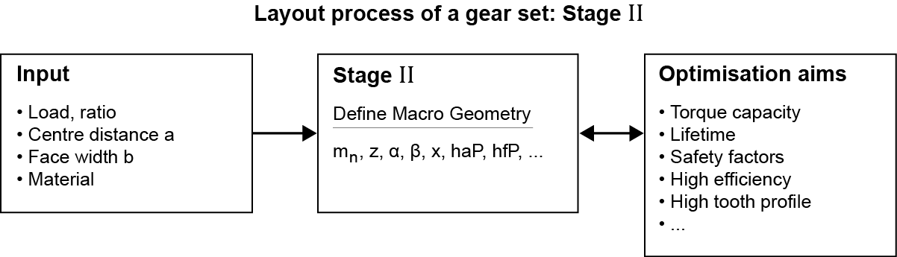

|
|
|


精细定尺寸（宏观几何）
精细定尺寸功能是 KISSsoft 最强大的工具之一。它会针对指定的齿宽和中心距，生成并显示所有可能的几何变体（模数、齿数等）；对于行星齿轮级，通常指定齿轮轮缘直径，并相应改变中心距。这些解以图形方式显示，因此您可以轻松找到最适合您用途的宏观几何变体。

图 14：
要调用功能，可以转到菜单并选择选项，或者点击工具栏中的 图标。
图标。
如果您输入名义传动比、中心距、模数区间、齿宽区间和螺旋角区间，以及压力角，KISSsoft 将计算并显示齿数、模数、螺旋角和变位系数的建议值。它还会显示与名义传动比的偏差、比滑和重合度。此模块还可用于对行星齿轮级、三齿轮和四齿轮传动系进行定尺寸。
初始参数（区间）的输入可通过下拉菜单中提供的几个选项来完成。可用选项如下：
- 最小值、最大值、步长
- 最小值、最大值、步数
- 最小值、步长、步数
- 最小值、步长（%）、步数
- 名义值、±步长（%）、步数
步数可以是有理数。
通过此过程找到的所有变体都可以根据多种不同的标准进行评估（传动比精度、重量、强度、轮齿接触刚度偏差等）。
根据您的需求，还可以对最重要的参数（齿顶圆、齿根圆、最小齿数、允许的根切等）设置限制。除了生成详述各解和摘要的文本报告外，摘要还可以图形方式显示。
齿宽出现在输入界面中，如有需要可在此修改。
行星齿轮的强度定尺寸
对行星齿轮级进行粗略定尺寸时，假定轮缘是静止的。如果轮缘旋转，则必须在定尺寸后更改转速。
Fine sizing macrogeometry
The fine sizing function is one of KISSsoft's most powerful tools. It generates and displays all the possible geometry variants (module, number of teeth, etc.) for the specified facewidth and center distance (the gear rim diameter is usually specified for planetary stages and the center distance varied accordingly). The solutions are displayed as graphics, so you can easily see the best possible macrogeometric variant for your purpose.
Figure 14:
To call the function, either go to the menu and select the option or click the icon in the tool bar.
If you input a nominal ratio, a center distance, and intervals for the module, facewidth and helix angle, as well as the pressure angle, KISSsoft calculates and displays suggestions for the number of teeth, module, helix angle and profile shift. It also shows the deviation from the nominal ratio, the specific sliding and the contact ratios. This module can also be used to size planetary stages, three and four gears trains.
The input of the initial parameters (intervals) can be done through several options available in the drop-down menu. The available options are:
- Minimum, maximum, step size
- Minimum, maximum, number of steps
- Minimum, step size, number of steps
- Minimum, step size in %, number of steps
- Nominal, +- step size in %, number of steps
The number of steps can be a rational number.
All the variants found by this process can be evaluated by a wide range of different criteria (accuracy of ratio, weight, strength, tooth contact stiffness deviation etc.)
Depending on your requirements, limits can also be set on the most important parameters (tip circle, root circle, minimum number of teeth, tolerated undercut etc.). In addition to creating text reports detailing the solutions and the summary, the summary can also be displayed as a graphic.
The facewidth appears in the input screen, where you can modify it if required.
Sizing of strength for a planetary gear
When performing rough sizing for planetary stages, it is assumed that the rim is static. If the rim rotates, you must change the speed after sizing.